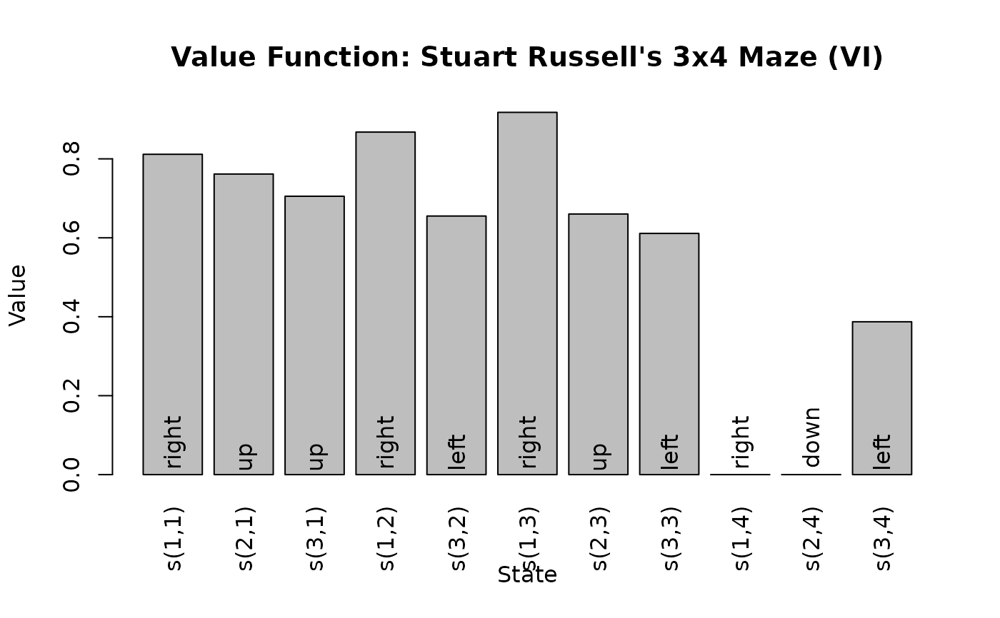
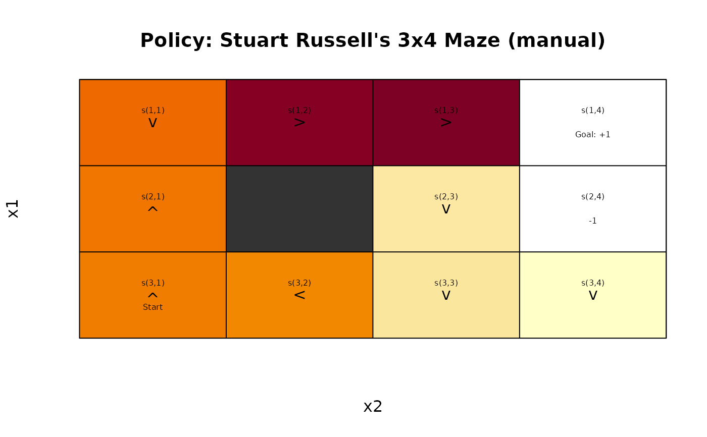
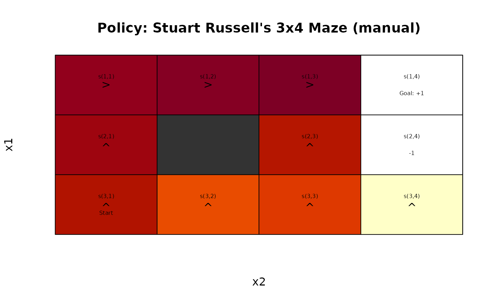
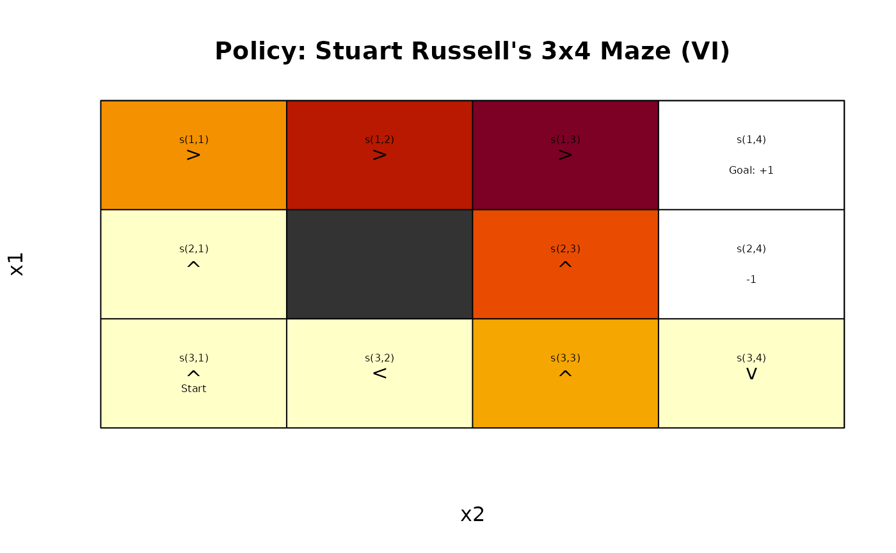
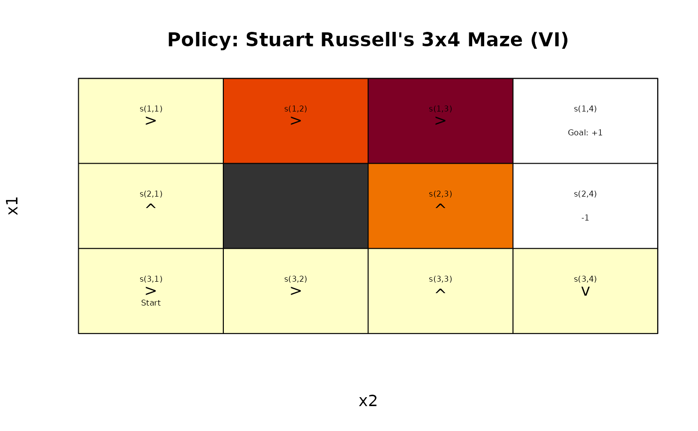
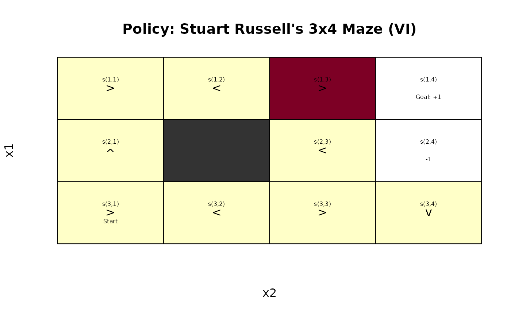

Extracts the policy from a solved model or create a policy. All policies are deterministic.
Usage
policy(model, epoch = NULL, drop = TRUE)
add_policy(model, policy)
random_policy(
model,
prob = NULL,
estimate_V = FALSE,
only_available_actions = FALSE,
...
)
manual_policy(model, actions, V = NULL, estimate_V = FALSE)
induced_transition_matrix(model, policy = NULL, epoch = 1L, sparse = FALSE)
induced_reward_matrix(model, policy = NULL, epoch = 1L)Arguments
- model
A solved MDP object.
- epoch
return the policy of the given epoch.
NULLreturns a list with elements for each epoch.- drop
logical; drop the list for converged, epoch-independent policies.
- policy
a policy data.frame.
- prob
probability vector for random actions for
random_policy(). a logical indicating if action probabilities should be returned forgreedy_action().- estimate_V
logical; estimate the value function using
policy_evaluation()?- only_available_actions
logical; only sample from available actions? (see
available_actions()for details)- ...
is passed on to
available_actions().- actions
a vector with the action (either the action label or the numeric id) for each state.
- V
a vector representing the value function for the policy. If
TRUE, then the it is estimated usingpolicy_evaluation().- sparse
logical; should a sparse transition matrix be returned?
Value
policy(),random_policy()andmanual_policy()return a data.frame containing the policy. Ifdrop = FALSEthen the policy is returned as a list with the policy for each epoch.add_policy()returns an MDP object.induced_transition_matrixreturns a single transition matrix.
The model description with the added policy.
Details
policy() extracts the (deterministic) policy from a solved MDP in the form of a
a data.frame with columns for:
state: The state.V: The state values if the policy is followed.action: The prescribed action.
For unconverged, finite-horizon problems, the solution is a policy for each epoch. This is returned as a list of data.frames.
add_policy() adds a policy to an existing MDP object.
random_policy() and manual_policy() construct new policies.
induced_transition_matrix() returns the single transition matrix which follows
the actions specified in a policy.
See also
Other policy:
action(),
expected_return(),
greedy_action(),
policy_evaluation(),
regret(),
visit_probability()
Examples
data("Maze")
sol <- solve_MDP(Maze)
sol
#> MDPModel, MDP - Stuart Russell's 3x4 Maze
#> Discount factor: 1
#> Horizon: Inf epochs
#> Size: 4 actions / 11 states
#> Storage: transition prob as matrix / reward as matrix. Total size: 32.3 Kb
#> Start: s(3,1)
#> Model list components: ‘name’, ‘discount’, ‘horizon’, ‘states’,
#> ‘actions’, ‘start’, ‘transition_model’, ‘reward’, ‘info’,
#> ‘absorbing_states’, ‘solution’
#>
#> Solved:
#> Method: ‘VI’
#> Solution converged: TRUE
#> Solution list components: ‘method’, ‘policy’, ‘converged’, ‘delta’,
#> ‘iterations’
## policy with value function and optimal action.
policy(sol)
#> state V action
#> 1 s(1,1) 0.8115564 right
#> 2 s(2,1) 0.7615521 up
#> 3 s(3,1) 0.7052527 up
#> 4 s(1,2) 0.8678082 right
#> 5 s(3,2) 0.6551492 left
#> 6 s(1,3) 0.9178082 right
#> 7 s(2,3) 0.6602740 up
#> 8 s(3,3) 0.6110843 left
#> 9 s(1,4) 0.0000000 right
#> 10 s(2,4) 0.0000000 down
#> 11 s(3,4) 0.3872455 left
plot_value_function(sol)

gw_plot(sol)
 induced_transition_matrix(sol)
#> s(1,1) s(2,1) s(3,1) s(1,2) s(3,2) s(1,3) s(2,3) s(3,3) s(1,4) s(2,4)
#> s(1,1) 0.1 0.1 0.0 0.8 0.0 0.0 0.0 0.0 0.0 0.0
#> s(2,1) 0.8 0.2 0.0 0.0 0.0 0.0 0.0 0.0 0.0 0.0
#> s(3,1) 0.0 0.8 0.1 0.0 0.1 0.0 0.0 0.0 0.0 0.0
#> s(1,2) 0.0 0.0 0.0 0.2 0.0 0.8 0.0 0.0 0.0 0.0
#> s(3,2) 0.0 0.0 0.8 0.0 0.2 0.0 0.0 0.0 0.0 0.0
#> s(1,3) 0.0 0.0 0.0 0.0 0.0 0.1 0.1 0.0 0.8 0.0
#> s(2,3) 0.0 0.0 0.0 0.0 0.0 0.8 0.1 0.0 0.0 0.1
#> s(3,3) 0.0 0.0 0.0 0.0 0.8 0.0 0.1 0.1 0.0 0.0
#> s(1,4) 0.0 0.0 0.0 0.0 0.0 0.0 0.0 0.0 1.0 0.0
#> s(2,4) 0.0 0.0 0.0 0.0 0.0 0.0 0.0 0.0 0.0 1.0
#> s(3,4) 0.0 0.0 0.0 0.0 0.0 0.0 0.0 0.8 0.0 0.1
#> s(3,4)
#> s(1,1) 0.0
#> s(2,1) 0.0
#> s(3,1) 0.0
#> s(1,2) 0.0
#> s(3,2) 0.0
#> s(1,3) 0.0
#> s(2,3) 0.0
#> s(3,3) 0.0
#> s(1,4) 0.0
#> s(2,4) 0.0
#> s(3,4) 0.1
## create a random policy
pi_random <- random_policy(Maze, estimate_V = TRUE)
pi_random
#> state V action
#> 1 s(1,1) -0.1241486 down
#> 2 s(2,1) -0.1739283 up
#> 3 s(3,1) -0.2299194 up
#> 4 s(1,2) 0.6723883 right
#> 5 s(3,2) -0.2796820 left
#> 6 s(1,3) 0.7222959 right
#> 7 s(2,3) -1.1000494 down
#> 8 s(3,3) -1.0633306 down
#> 9 s(1,4) 0.0000000 left
#> 10 s(2,4) 0.0000000 down
#> 11 s(3,4) -1.4537258 down
gw_plot(add_policy(Maze, pi_random))
induced_transition_matrix(sol)
#> s(1,1) s(2,1) s(3,1) s(1,2) s(3,2) s(1,3) s(2,3) s(3,3) s(1,4) s(2,4)
#> s(1,1) 0.1 0.1 0.0 0.8 0.0 0.0 0.0 0.0 0.0 0.0
#> s(2,1) 0.8 0.2 0.0 0.0 0.0 0.0 0.0 0.0 0.0 0.0
#> s(3,1) 0.0 0.8 0.1 0.0 0.1 0.0 0.0 0.0 0.0 0.0
#> s(1,2) 0.0 0.0 0.0 0.2 0.0 0.8 0.0 0.0 0.0 0.0
#> s(3,2) 0.0 0.0 0.8 0.0 0.2 0.0 0.0 0.0 0.0 0.0
#> s(1,3) 0.0 0.0 0.0 0.0 0.0 0.1 0.1 0.0 0.8 0.0
#> s(2,3) 0.0 0.0 0.0 0.0 0.0 0.8 0.1 0.0 0.0 0.1
#> s(3,3) 0.0 0.0 0.0 0.0 0.8 0.0 0.1 0.1 0.0 0.0
#> s(1,4) 0.0 0.0 0.0 0.0 0.0 0.0 0.0 0.0 1.0 0.0
#> s(2,4) 0.0 0.0 0.0 0.0 0.0 0.0 0.0 0.0 0.0 1.0
#> s(3,4) 0.0 0.0 0.0 0.0 0.0 0.0 0.0 0.8 0.0 0.1
#> s(3,4)
#> s(1,1) 0.0
#> s(2,1) 0.0
#> s(3,1) 0.0
#> s(1,2) 0.0
#> s(3,2) 0.0
#> s(1,3) 0.0
#> s(2,3) 0.0
#> s(3,3) 0.0
#> s(1,4) 0.0
#> s(2,4) 0.0
#> s(3,4) 0.1
## create a random policy
pi_random <- random_policy(Maze, estimate_V = TRUE)
pi_random
#> state V action
#> 1 s(1,1) -0.1241486 down
#> 2 s(2,1) -0.1739283 up
#> 3 s(3,1) -0.2299194 up
#> 4 s(1,2) 0.6723883 right
#> 5 s(3,2) -0.2796820 left
#> 6 s(1,3) 0.7222959 right
#> 7 s(2,3) -1.1000494 down
#> 8 s(3,3) -1.0633306 down
#> 9 s(1,4) 0.0000000 left
#> 10 s(2,4) 0.0000000 down
#> 11 s(3,4) -1.4537258 down
gw_plot(add_policy(Maze, pi_random))

## create a manual policy (go up and in some squares to the right)
acts <- rep("up", times = length(Maze$states))
names(acts) <- Maze$states
acts[c("s(1,1)", "s(1,2)", "s(1,3)")] <- "right"
acts
#> s(1,1) s(2,1) s(3,1) s(1,2) s(3,2) s(1,3) s(2,3) s(3,3) s(1,4) s(2,4)
#> "right" "up" "up" "right" "up" "right" "up" "up" "up" "up"
#> s(3,4)
#> "up"
pi_manual <- manual_policy(Maze, acts, estimate_V = TRUE)
pi_manual
#> state V action
#> 1 s(1,1) 0.8115582 right
#> 2 s(2,1) 0.7615582 up
#> 3 s(3,1) 0.6711367 up
#> 4 s(1,2) 0.8678082 right
#> 5 s(3,2) 0.3488563 up
#> 6 s(1,3) 0.9178082 right
#> 7 s(2,3) 0.6602740 up
#> 8 s(3,3) 0.4345002 up
#> 9 s(1,4) 0.0000000 up
#> 10 s(2,4) 0.0000000 up
#> 11 s(3,4) -0.8850705 up
gw_plot(add_policy(Maze, pi_manual))

# Transition matrix induced by the policy
induced_transition_matrix(Maze, pi_manual, sparse = TRUE)
#> Sparse CSR matrix (class 'dgRMatrix')
#> Dimensions: 11 x 11
#> (27 entries, 22.31% full)
## Finite horizon (we use incremental pruning because grid does not converge)
sol <- solve_MDP(model = Maze, horizon = 3)
sol
#> MDPModel, MDP - Stuart Russell's 3x4 Maze
#> Discount factor: 1
#> Horizon: 3 epochs
#> Size: 4 actions / 11 states
#> Storage: transition prob as matrix / reward as matrix. Total size: 37 Kb
#> Start: s(3,1)
#> Model list components: ‘name’, ‘discount’, ‘horizon’, ‘states’,
#> ‘actions’, ‘start’, ‘transition_model’, ‘reward’, ‘info’,
#> ‘absorbing_states’, ‘solution’
#>
#> Solved:
#> Method: ‘VI’
#> Solution converged: NA
#> Solution list components: ‘policy’, ‘converged’, ‘method’
policy(sol)
#> [[1]]
#> state V action
#> 1 s(1,1) 0.3920 right
#> 2 s(2,1) -0.1200 up
#> 3 s(3,1) -0.1200 up
#> 4 s(1,2) 0.7376 right
#> 5 s(3,2) -0.1200 left
#> 6 s(1,3) 0.8896 right
#> 7 s(2,3) 0.5720 up
#> 8 s(3,3) 0.3152 up
#> 9 s(1,4) 0.0000 down
#> 10 s(2,4) 0.0000 down
#> 11 s(3,4) -0.1200 down
#>
#> [[2]]
#> state V action
#> 1 s(1,1) -0.080 right
#> 2 s(2,1) -0.080 up
#> 3 s(3,1) -0.080 right
#> 4 s(1,2) 0.560 right
#> 5 s(3,2) -0.080 right
#> 6 s(1,3) 0.832 right
#> 7 s(2,3) 0.464 up
#> 8 s(3,3) -0.080 up
#> 9 s(1,4) 0.000 up
#> 10 s(2,4) 0.000 up
#> 11 s(3,4) -0.080 down
#>
#> [[3]]
#> state V action
#> 1 s(1,1) -0.04 right
#> 2 s(2,1) -0.04 up
#> 3 s(3,1) -0.04 right
#> 4 s(1,2) -0.04 left
#> 5 s(3,2) -0.04 left
#> 6 s(1,3) 0.76 right
#> 7 s(2,3) -0.04 left
#> 8 s(3,3) -0.04 right
#> 9 s(1,4) 0.00 right
#> 10 s(2,4) 0.00 up
#> 11 s(3,4) -0.04 down
#>
gw_plot(sol, epoch = 1)

gw_plot(sol, epoch = 2)

gw_plot(sol, epoch = 3)
